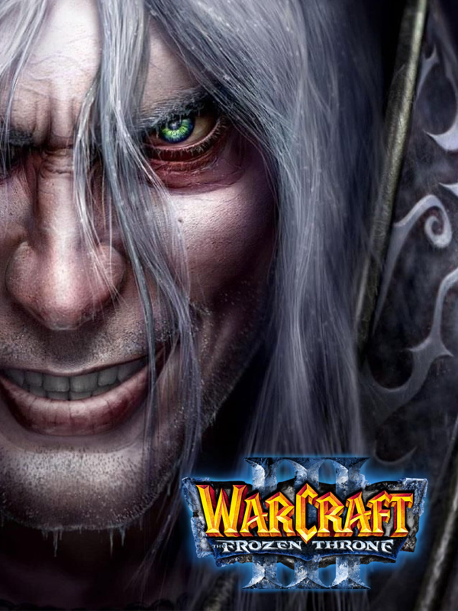
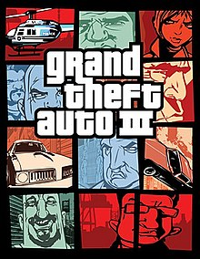

The Games We Play

Warcraft 3 is a high fantasy real-time strategy computer video game developed and published by Blizzard Entertainment released in July 2002. It is the second sequel to Warcraft: Orcs & Humans, after Warcraft II: Tides of Darkness, the third game set in the Warcraft fictional universe, and the first to be rendered in three dimensions. An expansion pack, The Frozen Throne, was released in July 2003. Warcraft III is set several years after the events of Warcraft II, and tells the story of the Burning Legion's attempt to conquer the fictional world of Azeroth with the help of an army of the Undead, led by fallen paladin Arthas Menethil. It chronicles the combined efforts of the Human Alliance, Orcish Horde, and Night Elves to stop them before they can corrupt the World Tree.

Grand Theft Auto III is a 2001 action-adventure game developed by DMA Design and published by Rockstar Games. It is the third main entry in the Grand Theft Auto series, following 1999's Grand Theft Auto 2, and the fifth instalment overall. Set within the fictional Liberty City (loosely based on New York City), the story follows Claude, a silent protagonist who, after being betrayed and left for dead by his girlfriend during a robbery, embarks on a quest for revenge that leads him to become entangled in a world of crime, drugs, gang warfare, and corruption. The game is played from a third-person perspective and its world is navigated on foot or by vehicle. Its open world design lets players freely roam Liberty City, consisting of three main areas.